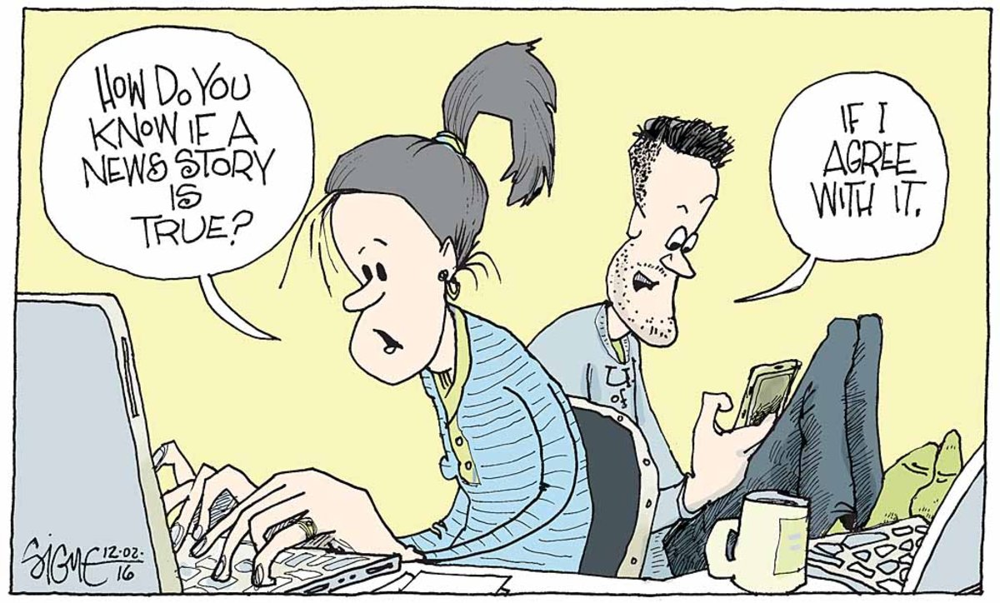
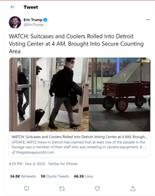

While Googling “fake news”, the results that came up were: “fake news article simulator”, “fake news generator”, “fake news detector”. These days fake news if very easy to fabricate. And with all the current social media platforms, it is very easy to spread to a large audience. People get very compelled to believe what is being spread. Because fake news is very compelling is why it is very dangerous. Some might not see fae news as being a big issue. And say that people who do fall for fake news, just need to be more careful and do their research. This can be hard for the elderly or children who aren’t as tech savvy/or are naïve. Children and the elderly are the primary demographic that tend to fall for fake news. It is not always that easy to determine what exactly is fake news. Fake news can be made in a way that really makes it seem like it is true. This is what makes it dangerous.
What is fake news?
The definition of fake news is pretty much in the name. Fake-News. False/misleading information presented by the media, or an individual. Fake news can be made with the intention of deceiving others in order to gain something.
Fake news can be split into different categories here are a few examples:
- Political fake news
- Celebrity fake news
- Speculation fake news
- Can be tied with conspiracy theories and rumors
Information from: “What Is ‘Fake News’ ?” 30sec To Check It Out, 6 Mar. 2019
Why people fall for fake news?
People fall for fake news because it reinforces a person’s own bias of what they already believe in, fake news is always sensational, it isn’t boring. Fake news also appeals to our emotions, clickbait, implicit bias, confirmation bias. As stated in the beginning the main demographic that tend to fall for fake news are the elderly/young that tend to fall for fake news. Fake news uses rhetoric’s in many was to intrigue people to believe in it. By using logos, ethos, pathos, detecting bias’s etc. This is why fake news is so compelling. Because of the way it is presented; it's presented in a way that makes it so beliveable.
Infromation From: “4 Reasons Why Fake News Is So Compelling.” Turnitin, 4 Dec. 2020
Why fake news is dangerous?
FAKE NEWS IS A CRISIS. In our latest election, the own president of the United States, spread fake news about mail-in ballots. How can fake news is not a crisis when it started affecting democracy. The government, people’s lives? Fake news is not just limited to harmless headlines of celebrities dating/breaking up. It brings harsher consequences.
A closer look into a fake news story:
Let’s focus on a fake news story about Trump's false claims on voter fraud. Kelly SoRelle a Republican from Texas shot a video of a man closing the doors of a white van and then rolling a wagon with a large box into a Detroit election center. This video circulated the internet and spread large speculation about fraud in the election. The video was viewed by over a MILLION people. It was even tweeted/shared by Eric Trump on November 4th “WATCH: Suitcases and Coolers Rolled Into Detroit Voting Center at 4 AM, Brought Into Secure Counting Area” This one 90-second video was more fuel to the fire of the speculations about voter fraud. It really leaves a scar on American Democracy, because "there will always be people who believe the 2020 election was stolen."-Jeniffer Mercieca a historian of political rhetoric at Texas A&M University. Despite their being no evidence of widespread fraud and election officials confirming there was no irregularities in the election. Many still believe that there was (voter fraud) due to the misinformation that is still coming from Trump. Due to the constant repition about voter fraud "There's two benefits of the repition...People are more likley to remember something...increases belief in a claim"- Lisa Fazio a psychology professor at Vanderbilt University.
Though this was just a quick overview on the story. One can see the extent to what misinformation could affect. There are many other case studys on fake news that are being disected. Another story is the following: Maheshwari, Sapna. “How Fake News Goes Viral: A Case Study.” The New York Times, The New York Times, 20 Nov. 2016, Case Study Which also is about a fake tweet that spread misinformation. Of course there are others on the internet that you can find with a simple search. With the article that I discussed I hope that you were able to get a deeper look into why fake news is dangerous. The rapid speed that misinformation spreads at, the lack of strong evidence, the mass availability of fake news, and overall how compelling the fake news story can be. Makes fake news dangerous!
Story/Infromation comes from the article by Amanda Seitz and David Klepper. “Dangerously Viral: How Trump, Supporters Spread False Claims.” and “How Fake News Spreads like a Real Virus.”
How to combat fake news:
Here are a few ways that one can do to fight/avoid fake news:
- Checking the source
- Question Everything
- Check the links within the article
- Follow up claims (do more background research on the information)
- Make others aware of fake news
- Look beyond your own bubble
- Be weary that an image might be photoshoped
Information from: “Fake News: What Is Fake News and Why Should We Care?” and “How to Avoid Falling for Lies and Fake News.”
Conclusion:
This website went over the reasons why fake news is a crisis and how to combat fake news. Through a deeper look into the reasoning one gets a better view on why fake news is dangerous. Hopefully you have found this information usefull. When on the internet always remember to be cautious of any news or story you encounter. Because you never know if the information is real or not. Following the tips to avoid fake news should help with that. It is very important that we are able to combat this issue so that in the futre we won't have issues that arise from fake news. Stay safe and weary of your news!
Works Cited:
- “4 Reasons Why Fake News Is So Compelling.” Turnitin, 4 Dec. 2020, www.turnitin.com/blog/4-reasons-why-fake-news-is-so-compelling.
- “Fake News: What Is Fake News and Why Should We Care?” LibGuides, butlercc.libguides.com/fakenews/.
- “Fake News: Why Do People Fall for Fake News?” Research Guides, libguides.tru.ca/fakenews/falling.
- “How Fake News Spreads like a Real Virus.” Stanford School of Engineering, 22 Oct. 2019, engineering.stanford.edu/magazine/article/how-fake-news-spreads-real-virus.
- “How to Avoid Falling for Lies and Fake News.” BBC Future, BBC, www.bbc.com/future/article/20170210-how-to-avoid-falling-for-lies-and-fake-news.
- Maheshwari, Sapna. “How Fake News Goes Viral: A Case Study.” The New York Times, The New York Times, 20 Nov. 2016, www.nytimes.com/2016/11/20/business/media/how-fake-news-spreads.html?_r=0.
- Seitz, Amanda and David Klepper. “Dangerously Viral: How Trump, Supporters Spread False Claims.” AP NEWS, Associated Press, 4 Dec. 2020, apnews.com/article/how-trump-supporters-spread-false-claims-8cf62c15893c4e8878a471e99ee81459.
- “What Is ‘Fake News’ ?” 30sec To Check It Out, 6 Mar. 2019, 30secondes.org/en/module/what-is-fake-news/.